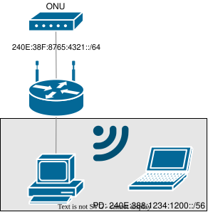
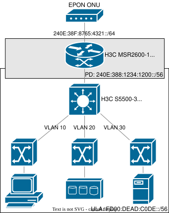
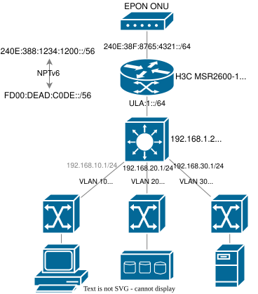

简介
IPv6 作为接替 IPv4 的下一代 IP 技术，其全面应用的时机还并不成熟，这主要是源于基础设施（软、硬件）落后、相关规范不完善、ISP 接入手段不周全，以及应用开发者的意识薄弱等问题.
在家庭场景中，许多 ISP 通过 DHCPv6 PD 的方式（往往在 PPPoE 之上）为终端用户分配一个前缀.
即使前缀是动态的（每次拨号或每天变化），用户只要用（唯一）一个支持双栈的路由器，这仍然是非常可行的. 如下图所示，家庭用户在 ONU 后面设置无线路由器.

简化拓扑
对于一个双栈路由器，建立互联网访问的步骤包括：
-
路由器与 ISP 建立 PPPoE 会话，并获取分配的 IPv4 端点地址.
-
路由器从 ISP PPPoE 对等方发送的 ICMPv6 RA 中配置其 IPv6 SLAAC 地址. （RA 包含前缀 240E:38F:8765:4321::/64）
-
路由器启动带有 IA_PD 选项的有状态 DHCPv6 客户端，并被委派前缀 240E:388:1234:1200::/56.
然后，路由器将向所有客户端发送 ICMPv6 RA，告诉他们拥有一个 IPv6 子网 240E:388:1234:1200::/56，此后所有客户端都将启动 SLAAC 配置，获得一个可公开访问的 IPv6 地址.
（值得注意的是，以上所有涉及 SLAAC 的步骤，都可替换为有状态 DHCPv6. ）
如果任何用户要将网络划分为不同的 VLAN，则动态前缀将挑战整个网络. 由于许多设备不支持动态前缀本地化或无法处理前缀失效的情况，因此我们必须稳定地址分配.
本文介绍了 IPv6 中“私有网络”地址空间以及在 H3C 路由器上配置 NPTv6 的步骤.
NPTv6
NPTv6 是一种无状态的 NAT 技术，它们在多宿主 IPv6 网络中非常流行. 它在 RFC 6296 中定义，但仍处于实验阶段.
由于 NPTv6 仅翻译第 3 层信息，因此仍保留端到端可达性.
唯一本地单播地址
ULA 是 IPv6 地址空间的块 FC00::/7，在 RFC 4193 中定义. ULA 前缀在概念上等同于 RFC 1918 中定义的 IPv4 私有网络地址.
ULA 的前身是站点本地单播地址（在 RFC 3513 中定义为 FEC0::/10，但随后在 RFC 3879 中被弃用）. 它们仍然出现在许多过时的文档中（示例 第 111 页）.
此示例配置将 FD00:DEAD:C0DE::/56 作为私网 ULA 前缀，其长度与从 ISP 获得的委派前缀 240E:388:1234:1200::/56 相同.

ULA 前缀
将 ULA 前缀分成不同的 VLAN，如下所示：
-
VLAN 10：FD00:DEAD:C0DE:A::/64
-
VLAN 20：FD00:DEAD:C0DE:14::/64
-
VLAN 30：FD00:DEAD:C0DE:1E::/64
配置
有了 NPTv6 和 ULA 前缀，我们现在可以配置我们的网络了.

配置拓扑
配置将涉及：
- PPPoE 拨号器
- IPv4 出站 NAT
- IPv4 出站 NAT 回环
- IPv6 出站 SLAAC
- PPPoE 拨号器上的 DHCPv6 PD
- NPTv6
- 基于 OSPFv2 的 IPv4 全可达性
- 基于 OSPFv3 的 IPv6 全可达性
- 双栈 VLAN 接口
接口
-
H3C MSR2600-10-X1 上的 VLAN 1
-
H3C S5500-34C-HI 上的 VLAN 1
-
H3C S5500-34C-HI 上的 VLAN 10
-
H3C S5500-34C-HI 上的 VLAN 20
-
H3C S5500-34C-HI 上的 VLAN 30
H3C MSR2600-10-X1
1
2
3
4
5
6
7
8
9
10
11
12
13
14
15
16
17
18
19
20
21
22
23
24
25
26
27
28
29
30
31
32
33
34
35
36
37
38
39
40
41
42
43
44
45
46
47
48
49
50
51
52
53
54
55
56
57
58
59
60
61
62
63
|
# OSPFv2 / OSPFv3 configuration
ospf 1 router-id 192.168.1.1
area 0.0.0.0
network 192.168.0.0 0.0.255.255
ospfv3 1
router-id 192.168.1.1
area 0.0.0.0
# dialer group policy
dialer-group 1 rule ip permit
interface GigabitEthernet0/0
# bind the interface to Dialer0
pppoe-client dial-bundle-number 0
# ONU Management Network (Optional)
# port link-mode route
# ip address 192.168.0.1 255.255.255.0
interface Dialer0
mtu 1492
# enable Dial-on-Demand Routing (DDR)
dialer bundle enable
# PPPoE credentials
ppp chap password cipher **REDACTED**
ppp chap user **REDACTED**
ppp pap local-user **REDACTED** password cipher **REDACTED**
# dialer configuration
dialer-group 1
dialer timer idle 0
dialer timer autodial 5
# IPv4 access
ip address ppp-negotiate
# IPv4 NAT
nat outbound
# IPv6 SLAAC from ISP ICMPv6 RA
ipv6 address auto
# IPv6 link-local address
ipv6 address auto link-local
# assign the prefix from DHCPv6 PD as #1
ipv6 dhcp client pd 1 rapid-commit option-group 1
# bidirectional NPTv6
nat66 prefix source FD00:DEAD:C0DE:: 56 240E:388:1234:1200:: 56
nat66 prefix destination 240E:388:1234:1200:: 56 FD00:DEAD:C0DE:: 56
interface Vlan-interface1
# enable NAT loopback
nat hairpin enable
# adjust TCP MSS
tcp mss 1280
# IPv4 static address
ip address 192.168.1.1 255.255.255.0
# IPv6 static address
ipv6 address 1 ::1:0:0:0:1/64
ipv6 address FD00:DEAD:C0DE:1::/64 eui-64
ipv6 address auto link-local
# ICMPv6 RA
undo ipv6 nd ra halt
ipv6 nd ra interval 60 10
ipv6 nd ra router-lifetime 600
ipv6 router-renumber enable
# OSPFv3 area
ospfv3 1 area 0.0.0.0
|
H3C S5500-34C-HI
1
2
3
4
5
6
7
8
9
10
11
12
13
14
15
16
17
18
19
20
21
22
23
24
25
26
27
28
29
30
31
32
33
34
35
36
37
38
39
40
41
42
43
44
45
46
47
48
49
50
51
52
|
ospf 1 router-id 192.168.1.254
area 0.0.0.0
network 192.168.0.0 0.0.255.255
ospfv3 1
router-id 192.168.1.254
area 0.0.0.0
interface Vlan-interface1
# IPv4 static address
ip address 192.168.1.254 255.255.255.0
# IPv6 SLAAC from router
ipv6 address auto
ipv6 address auto link-local
# OSPFv3 area
ospfv3 1 area 0.0.0.0
interface Vlan-interface10
# IPv4 static address
ip address 192.168.10.1 255.255.255.0
# IPv6 static address
ipv6 address FD00:DEAD:C0DE:A::/64 eui-64
ipv6 address auto link-local
# ICMPv6 RA
undo ipv6 nd ra halt
ipv6 nd router-preference high
# OSPFv3 area
ospfv3 1 area 0.0.0.0
interface Vlan-interface20
# IPv4 static address
ip address 192.168.20.1 255.255.255.0
# IPv6 static address
ipv6 address FD00:DEAD:C0DE:14::/64 eui-64
ipv6 address auto link-local
# ICMPv6 RA
undo ipv6 nd ra halt
ipv6 nd router-preference high
# OSPFv3 area
ospfv3 1 area 0.0.0.0
interface Vlan-interface30
# IPv4 static address
ip address 192.168.30.1 255.255.255.0
# IPv6 static address
ipv6 address FD00:DEAD:C0DE:1E::/64 eui-64
ipv6 address auto link-local
# ICMPv6 RA
undo ipv6 nd ra halt
ipv6 nd router-preference high
# OSPFv3 area
ospfv3 1 area 0.0.0.0
|
Validation
1
2
3
4
5
6
7
8
9
10
11
12
13
14
15
16
17
18
19
20
21
22
23
24
25
26
27
28
29
30
31
32
33
34
35
36
37
38
39
40
41
42
43
44
45
46
47
48
49
50
51
52
53
54
55
56
57
58
59
60
61
62
63
64
65
66
67
68
69
70
71
72
73
74
75
76
77
|
<H3C>show ipv6 prefix
Number Prefix Type
1 240E:388:1234:1200::/56 Dynamic
<H3C>show ipv6 dhcp client interface Dialer0
Dialer0:
Type: Stateless client
State: IDLE
Client DUID: 000300015c9781540200
Type: Stateful client requesting prefix
State: OPEN
Client DUID: 000300015c9781540200
Preferred server:
Reachable via address: FE80::5C98:CE58:400:84
Server DUID: 000300015c98ce580400
IA_PD: IAID 0x00000001, T1 302400 sec, T2 483840 sec
Prefix: 240E:388:1234:1200::/56
Preferred lifetime 604800 sec, valid lifetime 2592000 sec
Will expire on Sep 15 2023 at 12:36:39 (2587370 seconds left)
<H3C>show ipv6 routing-table
Destinations : 14 Routes : 14
Destination: ::/0 Protocol : Direct
NextHop : FE80::5C98:CE58:400:84 Preference: 80
Interface : Dia0 Cost : 0
Destination: ::1/128 Protocol : Direct
NextHop : ::1 Preference: 0
Interface : InLoop0 Cost : 0
Destination: 240E:388:1234:1200::/56 Protocol : Static
NextHop : :: Preference: 1
Interface : NULL0 Cost : 0
Destination: 240E:388:1234:1201::/64 Protocol : Direct
NextHop : :: Preference: 0
Interface : Vlan1 Cost : 0
Destination: 240E:388:1234:1201::1/128 Protocol : Direct
NextHop : ::1 Preference: 0
Interface : InLoop0 Cost : 0
Destination: 240E:38F:8765:4321::/64 Protocol : Direct
NextHop : :: Preference: 0
Interface : Dia0 Cost : 0
Destination: 240E:38F:8765:4321:5C97:8154:200:84/128 Protocol : Direct
NextHop : ::1 Preference: 0
Interface : InLoop0 Cost : 0
Destination: FD00:DEAD:C0DE:1::/64 Protocol : Direct
NextHop : :: Preference: 0
Interface : Vlan1 Cost : 0
Destination: FD00:DEAD:C0DE:1:5E97:81FF:FE54:202/128 Protocol : Direct
NextHop : ::1 Preference: 0
Interface : InLoop0 Cost : 0
Destination: FD00:DEAD:C0DE:A::/64 Protocol : O_INTRA
NextHop : FE80::5E97:5BFF:FE0A:102 Preference: 10
Interface : Vlan1 Cost : 2
Destination: FD00:DEAD:C0DE:14::/64 Protocol : O_INTRA
NextHop : FE80::5E97:5BFF:FE0A:102 Preference: 10
Interface : Vlan1 Cost : 2
Destination: FD00:DEAD:C0DE:1E::/64 Protocol : O_INTRA
NextHop : FE80::5E97:5BFF:FE0A:102 Preference: 10
Interface : Vlan1 Cost : 2
Destination: FE80::/10 Protocol : Direct
NextHop : :: Preference: 0
Interface : InLoop0 Cost : 0
Destination: FF00::/8 Protocol : Direct
NextHop : :: Preference: 0
Interface : NULL0 Cost : 0
|